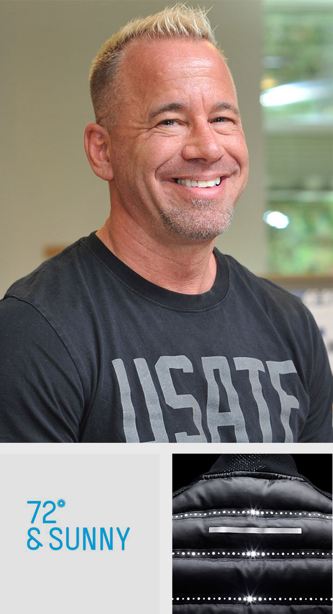
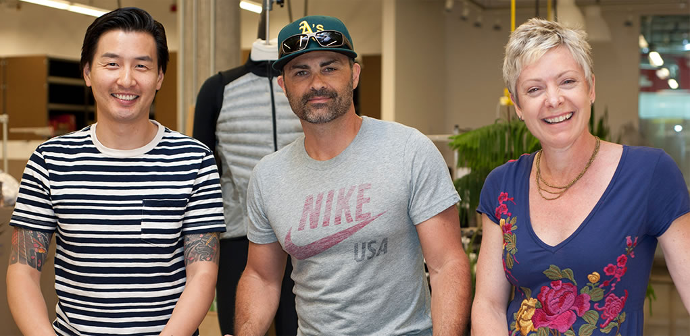
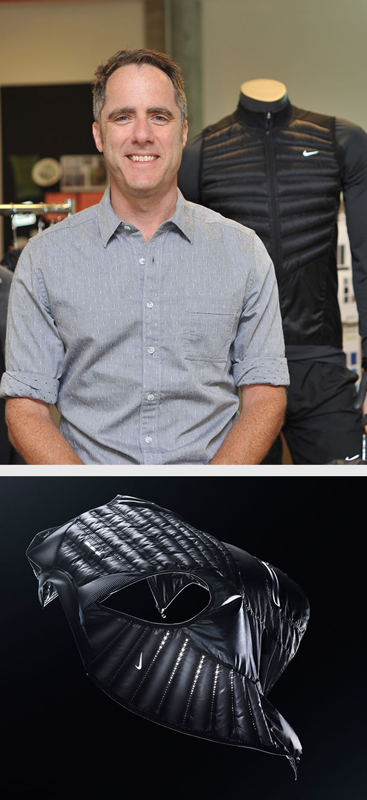
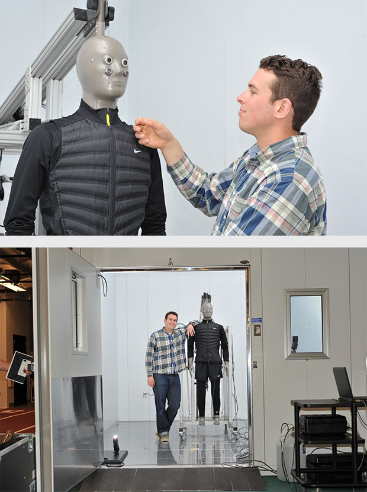
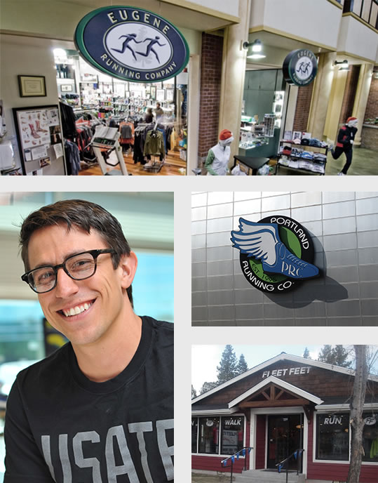

Scott Williams
Senior Creative Director of Apparel and Equipment Innovation
Two North Stars set the vision for Global Apparel innovation: Ever Ready and 72 (22 degrees Celcius) and Sunny. For the latter, imagine an athlete running in a perpetual state of 72 degrees Fahrenheit on a clear day. That mental model leads the design and development of warming solutions that maintain the constant body temperature independent of the environment.
The Apparel Innovation team, led by VP of Apparel Innovation Diana Crist, categorizes the 72 and Sunny projects into warm, cool and dry focuses, and until a few years ago, keeping the athlete cool dominated the research resources of the team.
“Staying warm is critical to athletes since they train all year round in crappy weather,” says Scott Williams, who works on the first floor of the Mia Hamm Building at WHQ. “Our team expanded so we could devote serious resources to invent and innovate in the ‘warm’ area on a constant basis, rather than having people jumping back and forth between ‘cool’ and ‘warm’ projects.”
Aeroloft looks sort of effortless, but there was a lot of pain, sweat and tears to get it to look so effortless.
-Scott Williams
The team’s renewed focus on inventing warm apparel resulted in the Aeroloft technology. And Williams played a key role in its product creation journey by supporting and driving the vision of the technology as factories, teammates and others wanted to throw in the towel.
“Aeroloft looks sort of effortless, but there was a lot of pain, sweat and tears to get it to look so effortless,” Williams says. “We probably tested hundreds of concepts: different sized baffles, different amounts of feathers, different sized holes, different materials. After all that, I’m so excited we ended up with such a stunning performance product with technology that’s intuitive to the consumer.”
“From a design standpoint, the brief wasn’t, ‘Go design a vest for cold weather running.’ I was new to the company and I was told, ‘Work on warm stuff. Go.’ There was no box I had to design within,” says Luke Pezzimenti, who worked for The North Face and other outdoor-focused companies before coming to Nike. “I talked to Categories to find common denominators, and layering, breathable and lightweight kept coming up.”
Pezzimenti created the first Aeroloft prototype in The Hive, the sewing machine-filled room in the Mia Hamm Building where talented tailors craft samples onsite. Remarkably, the design elements of that first version stayed true in the numerous iterations that followed. For instance, the baffles (the tunnels filled with down) splay out in a subtle fanning effect, and the vest’s fitted, far-from-puffer-jacket silhouette is devoid of unnecessary baffles on the sides, shoulders and part of the back.
I talked to Categories to
find common denominators, and layering, breathable and lightweight kept coming up.
-Luke Pezzimenti
From there, Pezzimenti joined forces with Yuki Aihara and Kathy Shepard to take Aeroloft from an idea to a commercial product.
The team faced a problem when it came to manufacturing the unique vest – the factory, one of the world’s leading producers of down jackets, proclaimed the task impossible.
“We needed the factory to complete a lot of complicated, time-consuming workmanship. They never created something like the Aeroloft vest before,” says Aihara, who managed the interaction between Nike and the factory on the project. “We had to push the factory outside of their comfort zone, which benefited them by helping them build expertise, speed and capabilities.”
With guidance from Aihara and the others, the factory more than halved the production time, signaling the technology’s scalability. And excitement within Nike Running and other Categories soon followed.
“I knew we had something special when sales forecasts for Aeroloft came in,” Shepard says.

Yuki Aihara
Innovation Senior Developer
Luke Pezzimenti
Senior Designer in Apparel Innovation
Kathy Shepard
Innovation Project Director

Joshua Zadoff
Outerwear Product Director
The business case for Aeroloft originated in the Outerwear Center of Excellence (which Nike Sportswear recently absorbed into its organization), a small team who oversaw Nike’s outerwear product offerings across Categories and Geographies. Joshua Zadoff, the Outerwear Product Director at the time, worked lockstep with Williams, Pezzimenti and the others in Apparel Innovation to bring the technology to fruition.
The Outerwear COE laid the groundwork for Aeroloft a few years ago when the group pinpointed a business opportunity for Nike: Outerwear built for sport.
There’s really nothing like it in the industry.-Joshua Zadoff
"Luke, the designer, started with a layering system mindset. He studied research on runners in Nordic countries who wore six or seven layers and shed the pieces one by one along their run,” Zadoff says. “It was an inefficient process that got him thinking about lightweight layers for high aerobic output.”
The result: a three-layer, cold weather system of dress that featured the prototype Aeroloft vest as a mid-layer.
The system of dress made its debut at a product review meeting with Global Apparel and Running Category leaders, where everyone immediately fixated on the Aeroloft vest and green-lighted its development.
“For the first time we brought an aesthetically unique construction method to an apparel piece, like how Free delivered a whole new construction for footwear,” Zadoff says. “There’s really nothing like it in the industry.”
The Outerwear COE and Japan Merchandising team enlisted the help of cold weather runners training for Japan’s Ekiden race, a 220-kilometer relay held in the dead of winter, to wear-test the Aeroloft vests. Their reactions? “So light, breathable and very comfortable,” “Unbelievably lightweight and easy to stretch and run in it,” and “Perforated holes look cool.” And plenty of other wear-testers followed, ranging from basketball players in China playing on frigid outdoor courts, speed skaters training in Korea, snowboarders, and even NIKE, Inc. President and CEO Mark Parker.
To validate the science behind Aeroloft’s performance benefits, the team turned to the dynamic duo of Hal and Collin. Collin Bailey, Physiology Researcher in the Nike Sport Research Lab, is the brains behind Hal, a life-sized sweating mannequin that resides in an environmental chamber that can simulate the heat of Rio de Janeiro and the biting temperatures of Moscow.
Bailey, a University of Oregon grad, has worked with Hal since the mannequin arrived at the NSRL a little over a year ago. Hal, with his 30 independently controlled thermal zones and 125 sweat pores, brought a new level of data collection to the Lab by providing a way to quantify a garment’s ability to dissipate heat through dry avenues or evaporation.
Ideally, Aeroloft should retain dry heat while allowing evaporation through the perforations. Yet the tests marked the first time Bailey didn’t have prior research to compare the findings to.
“It wasn’t like comparing a second-generation Hypercool top to a first-generation Hypercool top. We also didn’t want to compare it to other vests or jackets in the industry, so we started from scratch,” Bailey says. “We set out to learn how to use baffles and hole size to prescribe better performance.”
“So in a step-wise manner, we systematically changed the baffle size to test higher or lower insulation values, and increased and decreased hole size to test higher or lower evaporation rates,” Bailey says. “We changed thermal resistance and evaporative resistance at the same time to find the sweet spot.”
Find it they did, and more than 46 tests later – with each test taking several hours to complete – Bailey had analyzed more prototypes using more conditions than any other project in Hal’s testing history.

Hal
Sweating Thermal Mannequin
Collin Bailey
Physiology Researcher
We changed thermal resistance and evaporative resistance at the same time to find the sweet spot.-Collin Bailey
Once the Aeroloft vest is manufactured and hits the market, employees such as Tim Ramirez ensure retailers are quick to embrace the new technology. Ramirez is one of more than a dozen Pacers in North America who work closely with Brand Marketing and Sales to drive product sales and store education at running specialty shops. That means becoming an expert and advocate of products such as Aeroloft.
“I speak about the innovation and functionality, and make sure the staff knows the product’s benefits to justify its price point,” says Ramirez, a long-time runner who joined the Oregon Track Club in Eugene out of college.
Everyone’s immediately impressed by it. they recognize the innovation.-Tim Ramirez
Ramirez spends much of his time on the road visiting 30 stores, including Fleet Feet and Eugene Running Company, in the Pacific Northwest region. As he helped Bailey Boase, Western Sales Rep, sell Aeroloft products to the accounts, the stores’ staff consistently responded with surprise and awe.
“Everyone’s immediately impressed by it. They recognize the innovation. ‘That’s such a good idea for the baffle to breathe,’ they say,” Ramirez says. “But the stores that have picked it up have been the most progressive ones – the ones that don’t shy away from change and that embrace innovation.”
And what does Ramirez, a former elite runner and regular Nike wear-tester, think of the product?
“The Aeroloft vest is super lightweight – it’s crazy. You pick it up and it doesn’t make sense. The fact that you can pack a fashionable, performance down vest into your pocket is incredible,” he says. “In my opinion, as a functional running vest, it’s the first of its kind.”

Tim Ramirez
Pacer, Nike Running
the aeroloft vest is super light-weight - it’s crazy. you pick it up and it doesn’t make sense. the fact that you can pack a fashionable, performance down vest into your pocket is incredible.-Tim Ramirez